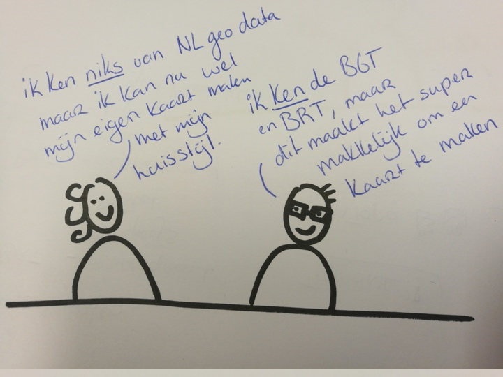

Data visualisatie of data voor visualisatie?
Niene Boeijen
Wat is er nu?
veel verschillende visualisaties
maar...
Geen een visualisatie zal ooit voor iedereen geschikt zijn
en..
de huidige technologie schaalt niet makkelijk
Kaart is niet makkelijk aan te passen...
Geoserver - SLD's zijn ingewikkeld
Data sets zijn niet makkelijk te combineren
Data in Qgis is moeilijk te stijlen (ook niet makkelijk met SLD)
Te veel lagen en data in WMS
Gebruiken we wel de juiste techniek?
Geoserver langzaam
ingewikkelde SLD's
meerdere tile sets opslaan..
langzaam update process
Huidig data model ondersteunt geen snelle en makkelijke visualisaties!
BGT geschikt voor beheer/registratie, niet visualisatie
Door lijn/vlak tweedeling moeilijk om consistentie te krijgen
Diepe kennis van meerdere datasets nodig om tot een consistente visualisatie te komen
Onze oplossing?

VISnl
1. Nieuwe vis dataset bouwen
zodat
2. Snel en makkelijk meerdere vis kunnen maken
Wat en hoe?
Het gaat niet om 'user experience' -- de perfecte kaart voor alle gebruikers
maar om 'developer experience' -- het moet makkelijk zijn meerdere kaarten te kunnen maken
- Makkelijk snel actueel te houden
- Proces goed gedocumenteerd
- Engels
- WebMercator
- Grokable
- Consistent
- Gebaseerd op NL data (BGT, BRT)
- Object ID behouden
- Uit te bereiden met meerdere datasets
Elke nitwit moet een kaart kunnen maken
Elke kenner moet een gedetailleerde kaart kunnen maken